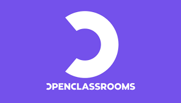

Portfolio d'Amaury Chasline
Administrateur réseaux | Systèmes numériques | Maintenance des systèmes informatiques

Administrateur réseaux | Systèmes numériques | Maintenance des systèmes informatiques


Office 365, Packet tracer, VirtualBox, Wireshark, Nmap, Putty, GitHub et Gitlab
Zabbix, Lynis, Proxmox
DHCP, DNS, IPTABLES, Pare-feu, Proxy, Serveur de Base de Données (MariaDB, PostgreSQL, MySQL)

DHCP, Service d'annuaire, Service fichier, Gestion des impression et des quotas, Service DNS, GPO

GLPI, OCSinventory, Itop


HTML, CSS, PhP, SQL, Bash, Powershell

Français (langue maternelle), Anglais (A2), Espagnol(A2)
Module MOOC-CNIL-RGPD :

Voir ma certification Module 1 : Module 1
Voir ma certification Module 2 : Module 2
Voir ma certification Module 3 : Module 3
Voir ma certification Module 4 : Module 4
Voir ma certification Module 5 : Module 5
Voir ma certification Secnum : SECNUM
Open Classromm :
Packet tracer, TCP/IP
Azure 900, quelques modules : Explication AZURE 900
Habilitation électrique niveau BR (intervention base tension générale)